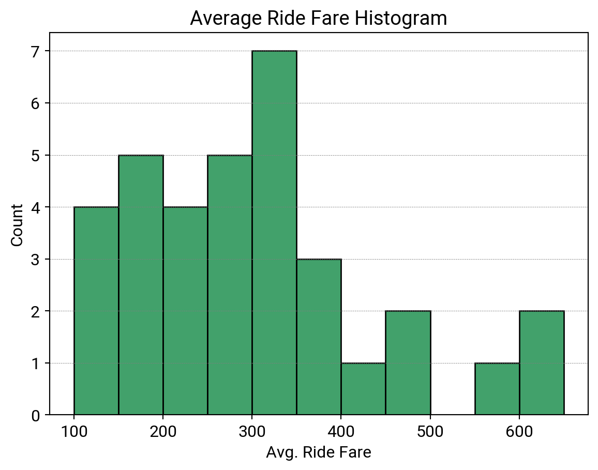

| City | Service Type | Created Date | Distance Buckets(KM) | Request | Offered Requests | Accepted Requests | Ride | Total Ride Fare(GMV)(IRR) | Offered-Order / Created-Order % | Accepted-Order / Offered-Order% | Fullfillment Rate% | Average Ride Fare | |
|---|---|---|---|---|---|---|---|---|---|---|---|---|---|
| 0 | A | 1.0 | 2022-06-22 | 0-1 | 763 | 737 | 611 | 507 | 53485000 | 97% | 83% | 66% | 105,493 |
| 1 | A | 1.0 | 2022-06-22 | 1-2 | 1358 | 1330 | 1090 | 933 | 100400000 | 98% | 82% | 69% | 107,610 |
| 2 | A | 1.0 | 2022-06-22 | 2-3 | 1094 | 1062 | 883 | 779 | 102060000 | 97% | 83% | 71% | 131,014 |
| 3 | A | 1.0 | 2022-06-22 | 3-4 | 938 | 916 | 737 | 628 | 89610000 | 98% | 80% | 67% | 142,691 |
| 4 | A | 1.0 | 2022-06-22 | 4-5 | 1060 | 1036 | 713 | 609 | 95235000 | 98% | 69% | 57% | 156,379 |
Pricing Data Analysis
1. Distance Bucket
When a customer submits an order, its data is logged in the “Order Table“. Then this order is offered to bikers. This data is stored in the “Offer Table,” and it means that an order is offered to “Biker ID” at the “created_at” moment, and when a “Biker ID” accepts to deliver that order, its data is stored in the “Allotment Table.”
The amount a customer pays is called “Fare,” The distance between the source and destination is called “Distance” in “The invoice Table“.
When an order is successfully finished, the “Status” field in the “Order Table” is “Delivered,” and when it fails to be completed, the “Status” field is “Canceled.”
“Ride” means a successfully finished ride, and “Request” means orders that customers create.
What’s your analysis of the pricing in this city? What are your suggestions to maximize the ride numbers?
Data Cleaning
First few rows of the data set are as follows:
City, Service Type, and Created Date contain no useful information due to the prefiltering process. These columns maintain a constant presence throughout the dataset. Additionally, the final row in the Excel sheet should be removed here.
Given the non-standard format of the column names, I have standardized them for better readability and compatibility with Python conventions.
Index(['dist_buck', 'request', 'offered_requests', 'accepted_requests', 'ride',
'tot_ride_fare', 'offered_created%', 'accepted_offered%',
'fulfillment_rate%', 'average_ride_fare'],
dtype='object')The presence of the ‘%’ sign has led to three ratio columns having an ‘object’ data type, which is inaccurate and complicates their analysis.
Checking data types:
<class 'pandas.core.frame.DataFrame'>
RangeIndex: 34 entries, 0 to 33
Data columns (total 10 columns):
# Column Non-Null Count Dtype
--- ------ -------------- -----
0 dist_buck 34 non-null object
1 request 34 non-null int64
2 offered_requests 34 non-null int64
3 accepted_requests 34 non-null int64
4 ride 34 non-null int64
5 tot_ride_fare 34 non-null int64
6 offered_created% 34 non-null int64
7 accepted_offered% 34 non-null int64
8 fulfillment_rate% 34 non-null int64
9 average_ride_fare 34 non-null object
dtypes: int64(8), object(2)
memory usage: 2.8+ KBThe column Average Ride Fare is currently of the ‘object’ data type, indicating that it hasn’t been stored as a numeric column. This is likely due to the inclusion of commas to enhance digit readability. However, to transform the column into a numeric format, I will remove the commas.
EDA
Exploratory Data Analysis helps us to obtain a general understanding of data and answer to valuable questions along the way.
Request
As the initial step, let’s examine the request column to identify the distance buckets that are more commonly favored.
| dist_buck | request | |
|---|---|---|
| 1 | 1-2 | 1358 |
| 6 | 6-7 | 1159 |
| 7 | 7-8 | 1151 |
| 2 | 2-3 | 1094 |
| 5 | 5-6 | 1091 |
| 8 | 8-9 | 1075 |
| 4 | 4-5 | 1060 |
| 9 | 9-10 | 940 |
| 3 | 3-4 | 938 |
| 10 | 10-11 | 777 |
A significant portion of the requests are associated with shorter distances, specifically those less than 10 kilometers.
A histogram can provide a more insightful perspective into the distribution of these bins.
The majority of distance buckets contain fewer than 200 requests. However, as observed earlier, certain bins exhibit a considerably higher volume of requests.
To gain a better understanding of distance buckets with fewer than 200 requests, I’ve generated the following pandas dataframe:
| dist_buck | request | |
|---|---|---|
| 29 | 31-32 | 2 |
| 30 | 32-33 | 3 |
| 32 | 34-35 | 3 |
| 31 | 33-34 | 4 |
| 28 | 30-31 | 4 |
| 26 | 26-27 | 4 |
| 27 | 28-29 | 5 |
| 33 | >=35 | 6 |
| 25 | 25-26 | 10 |
| 24 | 24-25 | 14 |
Evidently, there is a significant decline in the number of customer orders for longer distances.
Offered to Created Percentage
The subsequent table is arranged in descending order based on the percentage of Offered Orders to Created Orders:
| dist_buck | request | offered_created% | |
|---|---|---|---|
| 33 | >=35 | 6 | 100 |
| 32 | 34-35 | 3 | 100 |
| 31 | 33-34 | 4 | 100 |
| 30 | 32-33 | 3 | 100 |
| 29 | 31-32 | 2 | 100 |
| 27 | 28-29 | 5 | 100 |
| 25 | 25-26 | 10 | 100 |
| 24 | 24-25 | 14 | 100 |
| 21 | 21-22 | 36 | 100 |
| 1 | 1-2 | 1358 | 98 |
Greater distances are more likely to be offered completely. The histogram is plotted next:
A total of 22 distance buckets have exhibited an Offered to Created Orders ratio surpassing 95%.
There are a few buckets with notably low values of this ratio, falling below 80%. The subsequent dataframe identifies these specific buckets.
| dist_buck | request | offered_created% | average_ride_fare | |
|---|---|---|---|---|
| 23 | 23-24 | 14 | 71 | 331000 |
| 26 | 26-27 | 4 | 75 | 355000 |
| 28 | 30-31 | 4 | 75 | 647500 |
While the requests within these buckets might not immediately stand out, their average ride fare implies a significant value associated with these requests.
Accepted to Offered Percentage
To determine the proportion of accepted offers for bikers across different distance buckets, we can once more utilize a histogram to visualize the distribution of the accepted_offered% values. This will provide us with a comprehensive view of the data.
The majority of distance buckets exhibit an accepted-to-offered percentage ranging between 50 and 60. Nonetheless, there exist certain buckets with ratios lower than 50%. To gain a deeper understanding, let’s investigate and identify the distance buckets with percentages less than 60, arranging them in ascending order.
| dist_buck | accepted_offered% | average_ride_fare | |
|---|---|---|---|
| 21 | 21-22 | 36 | 375500 |
| 22 | 22-23 | 43 | 466000 |
| 16 | 16-17 | 44 | 280288 |
| 14 | 14-15 | 48 | 253193 |
| 18 | 18-19 | 49 | 302000 |
| 25 | 25-26 | 50 | 330000 |
| 13 | 13-14 | 52 | 255208 |
| 12 | 12-13 | 53 | 238963 |
| 15 | 15-16 | 53 | 268990 |
| 17 | 17-18 | 54 | 289630 |
| 19 | 19-20 | 54 | 316667 |
| 10 | 10-11 | 55 | 217089 |
| 11 | 11-12 | 55 | 230844 |
| 9 | 9-10 | 57 | 208434 |
| 20 | 20-21 | 58 | 333750 |
| 8 | 8-9 | 59 | 196339 |
Moderate distance buckets are more prone to get accepted with lower probability. We need to concentrate on these distance buckets if our intention is to raise ride numbers.
Fulfillment Percentage
This ratio holds valuable information as well, indicating the percentage of requests that have been fulfilled entirely. As a first step, let’s examine its histogram to gain insights into its distribution.
21 distance buckets have fullfillment rate lower than 50. Here are those buckets sorted by the ratio in ascending order:
| dist_buck | request | offered_created% | accepted_offered% | fulfillment_rate% | average_ride_fare | |
|---|---|---|---|---|---|---|
| 31 | 33-34 | 4 | 100 | 100 | 25 | 565000 |
| 18 | 18-19 | 90 | 88 | 49 | 28 | 302000 |
| 21 | 21-22 | 36 | 100 | 36 | 28 | 375500 |
| 22 | 22-23 | 15 | 93 | 43 | 33 | 466000 |
| 32 | 34-35 | 3 | 100 | 67 | 33 | 445000 |
| 16 | 16-17 | 159 | 95 | 44 | 33 | 280288 |
| 33 | >=35 | 6 | 100 | 83 | 33 | 472500 |
| 14 | 14-15 | 361 | 94 | 48 | 33 | 253193 |
| 19 | 19-20 | 68 | 90 | 54 | 35 | 316667 |
| 20 | 20-21 | 44 | 91 | 58 | 36 | 333750 |
| 23 | 23-24 | 14 | 71 | 70 | 36 | 331000 |
| 13 | 13-14 | 459 | 94 | 52 | 37 | 255208 |
| 17 | 17-18 | 145 | 92 | 54 | 37 | 289630 |
| 15 | 15-16 | 260 | 94 | 53 | 38 | 268990 |
| 12 | 12-13 | 488 | 93 | 53 | 39 | 238963 |
| 25 | 25-26 | 10 | 100 | 50 | 40 | 330000 |
| 27 | 28-29 | 5 | 100 | 80 | 40 | 345000 |
| 10 | 10-11 | 777 | 97 | 55 | 41 | 217089 |
| 11 | 11-12 | 705 | 95 | 55 | 43 | 230844 |
| 9 | 9-10 | 940 | 97 | 57 | 44 | 208434 |
| 8 | 8-9 | 1075 | 96 | 59 | 46 | 196339 |
Moderate to long distances have exhibited lower rates of fulfillment, and the reasons underlying this phenomenon should be investigated. It’s imperative to distinguish between buckets with only a few requests and those with a more considerable number. I need criteria to judge whether a distance bucket has a low number of requests or not, and to achieve this, I will use the first quarter of requests across the buckets.
Distance bukcets with low number of requests are:
| dist_buck | request | offered_created% | accepted_offered% | fulfillment_rate% | average_ride_fare | |
|---|---|---|---|---|---|---|
| 31 | 33-34 | 4 | 100 | 100 | 25 | 565000 |
| 32 | 34-35 | 3 | 100 | 67 | 33 | 445000 |
| 33 | >=35 | 6 | 100 | 83 | 33 | 472500 |
| 25 | 25-26 | 10 | 100 | 50 | 40 | 330000 |
| 27 | 28-29 | 5 | 100 | 80 | 40 | 345000 |
The above table consists of distance buckets with almost the longest paths implying that only a few requests want to send their packages in this range of KMs. It’s recommended to have an estimate of potential orders in each distance buckets via marketing research methods. It would clarify high prices cause the low number of requests or it’s just normal for long paths.
And those with more normal number of requests are:
| dist_buck | request | offered_created% | accepted_offered% | fulfillment_rate% | average_ride_fare | |
|---|---|---|---|---|---|---|
| 18 | 18-19 | 90 | 88 | 49 | 28 | 302000 |
| 21 | 21-22 | 36 | 100 | 36 | 28 | 375500 |
| 22 | 22-23 | 15 | 93 | 43 | 33 | 466000 |
| 16 | 16-17 | 159 | 95 | 44 | 33 | 280288 |
| 14 | 14-15 | 361 | 94 | 48 | 33 | 253193 |
| 19 | 19-20 | 68 | 90 | 54 | 35 | 316667 |
| 20 | 20-21 | 44 | 91 | 58 | 36 | 333750 |
| 23 | 23-24 | 14 | 71 | 70 | 36 | 331000 |
| 13 | 13-14 | 459 | 94 | 52 | 37 | 255208 |
| 17 | 17-18 | 145 | 92 | 54 | 37 | 289630 |
| 15 | 15-16 | 260 | 94 | 53 | 38 | 268990 |
| 12 | 12-13 | 488 | 93 | 53 | 39 | 238963 |
| 10 | 10-11 | 777 | 97 | 55 | 41 | 217089 |
| 11 | 11-12 | 705 | 95 | 55 | 43 | 230844 |
| 9 | 9-10 | 940 | 97 | 57 | 44 | 208434 |
| 8 | 8-9 | 1075 | 96 | 59 | 46 | 196339 |
On the other hand, let’s take a look at the buckets with the most fulfillment percentages:
| dist_buck | request | offered_created% | accepted_offered% | fulfillment_rate% | average_ride_fare | |
|---|---|---|---|---|---|---|
| 2 | 2-3 | 1094 | 97 | 83 | 71 | 131014 |
| 1 | 1-2 | 1358 | 98 | 82 | 69 | 107610 |
| 3 | 3-4 | 938 | 98 | 80 | 67 | 142691 |
| 30 | 32-33 | 3 | 100 | 67 | 67 | 627500 |
| 0 | 0-1 | 763 | 97 | 83 | 66 | 105493 |
| 4 | 4-5 | 1060 | 98 | 69 | 57 | 156379 |
| 24 | 24-25 | 14 | 100 | 93 | 57 | 391875 |
| 5 | 5-6 | 1091 | 97 | 68 | 55 | 167455 |
| 6 | 6-7 | 1159 | 98 | 66 | 55 | 176598 |
| 7 | 7-8 | 1151 | 97 | 64 | 52 | 186631 |
Probability of delivering for shorter distances is higher than moderate and longer ones.
Total and Average Ride Fare
Finally, let’s delve into the distribution of these crucial numeric columns and explore the potential questions they might raise.
NOTE: the values turned to MillionIRR for conveniece.
A total of 18 distance buckets yielded less than 20 MIRR (Metric for Income from Rides) on that specific day for service type 1. In contrast, 5 distance buckets generated substantial revenues. Let’s identify both groups starting with those with low revenue:
| dist_buck | request | offered_created% | accepted_offered% | fulfillment_rate% | tot_ride_fare_mirr | |
|---|---|---|---|---|---|---|
| 29 | 31-32 | 2 | 100 | 100 | 50 | 0.300 |
| 32 | 34-35 | 3 | 100 | 67 | 33 | 0.445 |
| 31 | 33-34 | 4 | 100 | 100 | 25 | 0.565 |
| 27 | 28-29 | 5 | 100 | 80 | 40 | 0.690 |
| 26 | 26-27 | 4 | 75 | 100 | 50 | 0.710 |
| 33 | >=35 | 6 | 100 | 83 | 33 | 0.945 |
| 30 | 32-33 | 3 | 100 | 67 | 67 | 1.255 |
| 28 | 30-31 | 4 | 75 | 67 | 50 | 1.295 |
| 25 | 25-26 | 10 | 100 | 50 | 40 | 1.320 |
| 23 | 23-24 | 14 | 71 | 70 | 36 | 1.655 |
| 22 | 22-23 | 15 | 93 | 43 | 33 | 2.330 |
| 24 | 24-25 | 14 | 100 | 93 | 57 | 3.135 |
| 21 | 21-22 | 36 | 100 | 36 | 28 | 3.755 |
| 20 | 20-21 | 44 | 91 | 58 | 36 | 5.340 |
| 18 | 18-19 | 90 | 88 | 49 | 28 | 7.550 |
| 19 | 19-20 | 68 | 90 | 54 | 35 | 7.600 |
| 16 | 16-17 | 159 | 95 | 44 | 33 | 14.575 |
| 17 | 17-18 | 145 | 92 | 54 | 37 | 15.640 |
It’s expected to have an acceptable amount of revenue in longer distances despite its lower requests. Lower rates of fulfillment, though, has prohibited that goal.
Next, those with higher revenue:
| dist_buck | request | offered_created% | accepted_offered% | fulfillment_rate% | tot_ride_fare_mirr | |
|---|---|---|---|---|---|---|
| 7 | 7-8 | 1151 | 97 | 64 | 52 | 112.725 |
| 6 | 6-7 | 1159 | 98 | 66 | 55 | 111.610 |
| 2 | 2-3 | 1094 | 97 | 83 | 71 | 102.060 |
| 5 | 5-6 | 1091 | 97 | 68 | 55 | 101.310 |
| 1 | 1-2 | 1358 | 98 | 82 | 69 | 100.400 |
To gain a deeper understanding of the fare amount, considering the average figures can also be insightful:

3 distance buckets appear to be more profitable having averages higher than 400000. In the following table, you can see which buckets have such averages:
| dist_buck | request | ride | accepted_offered% | fulfillment_rate% | tot_ride_fare_mirr | average_ride_fare | |
|---|---|---|---|---|---|---|---|
| 32 | 34-35 | 3 | 1 | 67 | 33 | 0.445 | 445000 |
| 22 | 22-23 | 15 | 5 | 43 | 33 | 2.330 | 466000 |
| 33 | >=35 | 6 | 2 | 83 | 33 | 0.945 | 472500 |
| 31 | 33-34 | 4 | 1 | 100 | 25 | 0.565 | 565000 |
| 30 | 32-33 | 3 | 2 | 67 | 67 | 1.255 | 627500 |
| 28 | 30-31 | 4 | 2 | 67 | 50 | 1.295 | 647500 |
Indeed, it’s evident that longer distances with fewer requests tend to yield higher average ride fares, but even so low rates of fulfillment might imply bad practices of pricing.
Relationship between Variables
In the upcoming three scatterplots, I intend to examine whether any relationships exist between the variables.
A negative virtually linear relationship can be seen in the first part of accepted_offered% and fulfillment_rate% vs. average_ride_fare plots. In the second part, however, such a characteristic is gone.
One speculation is that pricing in those distance buckets with fares in the middle range have not been adjusted correctly. In other words, snapp have not incentivized bikers appropriately.
Suggestions
NOTE: The suggestions below are made under the assumption that changes in order prices do not affect the cost structure. Additionally, external factors are disregarded, which is far from realistic business environment and price theory.
Also, the analysis so far is based on the data generated in one day for the service type in a particular city. In general, we can’t conclude with a one-day data set.
The
fulfillment ratein long distance buckets, especially with fewer requests, such as distances longer than 33 kilometers, is not very good. Despite of their higher average fares, we can increase the price as an incentive for riders to complete their orders. For example, in buckets 30-31 and 32-33 the average fare is higher than bucket with above-35 Kms (all three groups have similar number of rides). Prices should be increased with respect to distances, but not to the extent that makes us lose our orders.Moderate distance buckets also suffer from low
accepted-to-offeredandfulfillment ratepercentages. In these bins, number of requests surges comparing with the longer distances. Generally, the range of the average ride fare in these groups are in the middle. It could be helpful to increase price here too, but we should bear in mind that with the higher price, the number of requests are likely to drop and we need an optimized price here. Willingness-to-pay calculation, for instance, is able to give us a hint regarding the extent of price increases.Finally, distance buckets with shorter paths are the most lucrative ones. Number of
requestsfor these types of rides is much greater than others and if we assume 70% as an acceptablefulfillment rate, current price level seems right and no specific price action is needed.Total Ride FareorGMVis its peak at these distance buckets because of high requests. This number is in direct relationship with requests (and rides) and price, so decreasing prices can lead to more requests and may cover more than the loss due to lower price. Such policy, though, must be conducted after more analysis of potential exploitation of the market.
2. Ride Loss Calculation
Sometimes a technical problem arises and affects the creation or finishing of the orders. In these situations, business performance would drop, and some orders would be lost. One of the business team’s tasks is investigating how these issues affect the business. On June 8th, there was a technical issue, and bikers couldn’t accept the orders after 10 p.m., and the ride number dropped. In this question, you should calculate the number of rides we lost because of this issue. The table contains the performance of 2 regular days.
| date | hour | requester | request | ride | offered_created% | accepted_offered% | fulfillment_rate% | average_ride_fare | |
|---|---|---|---|---|---|---|---|---|---|
| 0 | 2022-06-06 | 19 | 4738 | 5826 | 3982 | 99 | 83 | 68 | 250652 |
| 1 | 2022-06-06 | 20 | 4176 | 5155 | 3361 | 99 | 80 | 65 | 234125 |
| 2 | 2022-06-06 | 21 | 3128 | 3860 | 2493 | 99 | 79 | 65 | 242016 |
| 3 | 2022-06-06 | 22 | 1829 | 2272 | 1418 | 98 | 78 | 62 | 243427 |
| 4 | 2022-06-06 | 23 | 897 | 1125 | 597 | 98 | 70 | 53 | 236650 |
| 5 | 2022-06-07 | 19 | 4679 | 5676 | 3944 | 99 | 84 | 69 | 251826 |
| 6 | 2022-06-07 | 20 | 4169 | 5152 | 3359 | 99 | 80 | 65 | 233678 |
| 7 | 2022-06-07 | 21 | 3322 | 4189 | 2632 | 99 | 78 | 63 | 235927 |
| 8 | 2022-06-07 | 22 | 2072 | 2664 | 1518 | 99 | 73 | 57 | 235840 |
| 9 | 2022-06-07 | 23 | 841 | 1043 | 531 | 96 | 69 | 51 | 237552 |
| 10 | 2022-06-08 | 19 | 4963 | 6055 | 4281 | 99 | 85 | 71 | 266712 |
| 11 | 2022-06-08 | 20 | 4246 | 5211 | 3510 | 99 | 82 | 67 | 252352 |
| 12 | 2022-06-08 | 21 | 3319 | 4105 | 2584 | 99 | 78 | 63 | 255681 |
| 13 | 2022-06-08 | 22 | 2123 | 2974 | 926 | 99 | 41 | 31 | 242414 |
| 14 | 2022-06-08 | 23 | 1158 | 1850 | 164 | 98 | 15 | 9 | 304116 |
Comparing the Days
Before 10 p.m., the average fare on June 8th was consistently higher than the previous days, suggesting that each request’s contribution was above the requests on June 6th and 7th. This difference is intesified after 10 p.m. A deeper investigation is warranted to determine whether the higher average fares were as a result of technical issues and rides decrease or influenced by specific factors on that day.
It’s clear that, on average, on 6th and 7th of June, the ratio of accepted-to-offered before 10 p.m. are similar with its value on the 8th. However, after that hour, this ratio dropped significantly on June 8th. The average was 75.5% for the first two nights, but it dropped to 41% on the last night. Also, at 11 p.m, the average ratio was 69.6% and it dropped to 15% on the 8th!
Losses Calculations
The table below presents the average values for the relevant variables for the 6th and 7th days.
| hour | request | ride | offered_created% | accepted_offered% | fulfillment_rate% | average_ride_fare | |
|---|---|---|---|---|---|---|---|
| 0 | 19 | 5751.0 | 3963.0 | 99.0 | 83.5 | 68.5 | 251239.0 |
| 1 | 20 | 5153.5 | 3360.0 | 99.0 | 80.0 | 65.0 | 233901.5 |
| 2 | 21 | 4024.5 | 2562.5 | 99.0 | 78.5 | 64.0 | 238971.5 |
| 3 | 22 | 2468.0 | 1468.0 | 98.5 | 75.5 | 59.5 | 239633.5 |
| 4 | 23 | 1084.0 | 564.0 | 97.0 | 69.5 | 52.0 | 237101.0 |
And for a better understanding, here is the data for the last day, June 8th:
| hour | request | ride | offered_created% | accepted_offered% | fulfillment_rate% | average_ride_fare | |
|---|---|---|---|---|---|---|---|
| 10 | 19 | 6055 | 4281 | 99 | 85 | 71 | 266712 |
| 11 | 20 | 5211 | 3510 | 99 | 82 | 67 | 252352 |
| 12 | 21 | 4105 | 2584 | 99 | 78 | 63 | 255681 |
| 13 | 22 | 2974 | 926 | 99 | 41 | 31 | 242414 |
| 14 | 23 | 1850 | 164 | 98 | 15 | 9 | 304116 |
Next, the two tables are merged together to enable further calculations (67J is derived from the table including the 6th and 7th of June, while 8J corresponds to the table of the 8th):
| hour | request67J | ride67J | accepted_offered%67J | fulfillment_rate%67J | average_ride_fare67J | request8J | ride8J | accepted_offered%8J | fulfillment_rate%8J | average_ride_fare8J | |
|---|---|---|---|---|---|---|---|---|---|---|---|
| 0 | 19 | 5751.0 | 3963.0 | 83.5 | 68.5 | 251239.0 | 6055 | 4281 | 85 | 71 | 266712 |
| 1 | 20 | 5153.5 | 3360.0 | 80.0 | 65.0 | 233901.5 | 5211 | 3510 | 82 | 67 | 252352 |
| 2 | 21 | 4024.5 | 2562.5 | 78.5 | 64.0 | 238971.5 | 4105 | 2584 | 78 | 63 | 255681 |
| 3 | 22 | 2468.0 | 1468.0 | 75.5 | 59.5 | 239633.5 | 2974 | 926 | 41 | 31 | 242414 |
| 4 | 23 | 1084.0 | 564.0 | 69.5 | 52.0 | 237101.0 | 1850 | 164 | 15 | 9 | 304116 |
Next, we subtract the actual number of rides from the expected value, which is derived from the average of previous days:
| hour | expected_accepted | expected_ride | loss_rides | average_ride_fare8J | |
|---|---|---|---|---|---|
| 3 | 22 | 2245.37 | 1770.0 | 844.0 | 242414 |
| 4 | 23 | 1285.75 | 962.0 | 798.0 | 304116 |
The question asked about the number of rides lost because of the technical issue. Nevertheless, an estimation of revenue loss could also offer valuable insights. Ultimately, the calculation for revenue loss is as follows:
| hour | loss_rides | revenue_loss_million | |
|---|---|---|---|
| 3 | 22 | 844.0 | 429.072780 |
| 4 | 23 | 798.0 | 292.559592 |
NOTE: In calculating revenue loss, I’ve assumed that the average ride fare would not have changed significantly if the technical issue hadn’t occurred.
3. Price Monitoring
The whole logic of box pricing is to match the demand and supply. The business performs well, and supply and demand are balanced when the price has been set correctly. We do real-time monitoring to ensure sound business performance and change prices whenever needed. The business would be at its best when the Accepted-Order to Offered-Order ratio is between 75% and 80%. These tables represent a snapshot of city A’s real-time data at 17:30. We defined 19 areas in this city, which are coded. In this question, tell us what price action is needed to improve the business performance at 17:30.
NOTE: Considering that Area Code 127 and 128 have notably high numbers of requests, it makes sense to consider them as outliers. Therefore, changing the center in the first heatmap to the median number of requests is a more robust approach.
An more compeling heatmap shows the magnitude of deviation from our preferable range. In the next figure, direction and magnitude of deviation from the desired range is demonstrated. Those cells containing value of 0 represent acceptable percentage.
Areas 111, 114, 115, 116, 118, 121, 123, 124, and 126 have deviated more frequently and with higher percentage points than other areas. Pricing policies must be modified to achieve a more stable and favorable percentage.
Recommending Price Actions
In the next section, I provide some suggestions that can contribute to the business performance based on the criterion given in the question. However, it’s imperative to take number of requests (demand) into account as increasing or decreasing prices impact directly on it.
Areas 112, 113, 117, 119, 120, 125, 127, and 128 (High Requests)
We need to incentivize riders to accomplish the orders in areas that have large number of
requestsbut lowrates of fulfillment. For instance, Areas 117, 119, and 125 have shown potentials since they have more requets relatively. We can offer bikers a more proportion of fare as their commission (in case it would be possible) to gain a betterfulfillment rate.Considering the second table (Accepted Orders to Offered Orders) and our criterion for business performance, the ratio in Area 112 is in its desired range at 17 o’clock, so no price action is needed. Areas 113 and 127 have larger than desired ratio, and this means we should make other areas more attractive to bikers. Areas 117, 119 and 125 are suffering from low percentage so that increasing prices can be beneficial (117 and 119 are in more critical situations).
Areas 120, 125, and 128 are so close to the desired range according to the tables above. Their previous hours trend don’t show too much volatility as well. Therefore, it’s recommended not to change prices in these areas.
Areas 110, 111, 114, 115, 116, 118, 121, 122, 123, 124, 126 (Low Requests)
Ratios in some areas are far below the desired range, but the fact that these areas have received few requests means we should not conclude to increase prices immediately. In fact, one of the reasons why the number of requests is insignificant in these regions may be their high prices. If we had historical information about these areas and their demographic characteristics, we would be more confident in judging if we are attracting suboptimal requests and high pricing is an issue. We assume number of orders are in their natural range.
Areas 110 and 114 have
accepted-to-offeredpercentage above the desired range, so we can increase prices in other areas as a nudge for riders to accept orders in those regions rather than in these two.The remaining areas need to have more acceptance rates. Areas 115, 121, 123, and 125 should be taken care of as they have a very low percentage at 17. But again, we would also be better off to increase the commission proportion in favor of riders as
fulfillment rateis poor. We must remember that prices leads to even lower requests, and the company should seek an optimal increase.Areas 115 and 122 have a
fulfillment rateof 0 at 17 o’clock! In other words, those few requests haven’t been delivered at all. Area codes 111, 116, 118, 121, 123 and 126 have rates less than or equal to 50%. Area 123, in specific, is doing poorly throughout the day in this matter.accepted-to-offeredin area 122 didn’t meet the desired level at 12, 13, and 14, and at 16, there was just one request. It might be more reasonable to raise prices to make it more attractive in this area.accepted-to-offeredin area 124 has been somewhat unstable throughout these hours, but now reached its acceptable level. We don’t change pricing in this area.
Missing Values
In all three tables we see no values for some area codes at some hours during the day. Missing values should always be taken serious and neglecting them could mislead our conclusions.
In table 2, the
accepted-to-offeredof area code 123 are missed from 13 to 16 and we only have 2 values (33%) at 12 and 17. We have to stick to the most recent here, but if previous days data existed, we could impute missing values in order to analyze and decide with greater precision. Nonetheless, we know that in this area we have a handful number of requests that are more likely not to delivered (based on fulfillment rate table).Since there is no value available for accepted-to-offered orders in Area 122 at 17 o’clock, our decision must rely on the data from 16 o’clock.
4. Price Test
We increased the price of service type 1 in 6 of our cities for two days to test the effect of this change on business. You can see the business parameter changes caused by the price change. What’s your analysis of the test result based on this data? Should we increase our prices in these cities? Explain your answer.
Note:
We can count the number of users that get the price (checker) and the total number of this action (check).
Price Conversion: The ratio of the users who submit the orders to those who get the prices.
GMV: Gross Merchandise Value. (The sum of the rides price)
| City | Test Day | Request | Ride | Price Conversion | Accepted-Order / Offered-Order% | Fullfillment Rate% | GMV | Average Fare Per KM | Ride Per Check | |
|---|---|---|---|---|---|---|---|---|---|---|
| 0 | City 1 | Test Day 1 | -6% | -1% | -1% | 2% | 3% | 3% | 6% | 1% |
| 1 | City 1 | Test Day 2 | -2% | 2% | -1% | 1% | 3% | 4% | 3% | 1% |
| 2 | City 2 | Test Day 1 | -5% | -4% | -1% | 0% | 0% | -3% | 1% | -1% |
| 3 | City 2 | Test Day 2 | -2% | -5% | -4% | -1% | -2% | 9% | 12% | -1% |
| 4 | City 3 | Test Day 1 | -4% | -5% | 0% | -2% | -1% | -7% | 1% | -1% |
| 5 | City 3 | Test Day 2 | -3% | -3% | -2% | 0% | 0% | -2% | 3% | 0% |
| 6 | City 4 | Test Day 1 | -5% | 3% | 1% | 5% | 5% | 1% | 1% | 1% |
| 7 | City 4 | Test Day 2 | -4% | -1% | -1% | 2% | 2% | -3% | 1% | 0% |
| 8 | City 5 | Test Day 1 | -8% | -4% | -1% | 4% | 2% | 14% | 20% | 0% |
| 9 | City 5 | Test Day 2 | -9% | 2% | -2% | 7% | 7% | 5% | 7% | 1% |
| 10 | City 6 | Test Day 1 | -2% | -4% | -1% | -2% | -1% | -8% | -4% | 0% |
| 11 | City 6 | Test Day 2 | -6% | -7% | -1% | -2% | -1% | -1% | -5% | -1% |
Data Description
Requesthas decreased in all cities and both days and this change direction was expected according to the downward demand curve. But this measure is not our criteria by itself and we’ll conclude after analysis of other variables.Ridecolumn is lower than before in most cities and days since the number of requests decreased.Price Conversionalso declined in almost all cities in both days except City 3 Day 1 and City 4 day 1. In other words, the probability of submiting an order after seeing the price deacreased too. Higher prices and lowerrequestsled to these relative changes.Accepted-to-Offeredratios increased in City 1, 4, and 5 on both days. The most significant surge inAccepted-to-Offeredratios was observed in City 5. On the other hand, Cities 2, 3, and 6 experienced a decrease in their ratios. This ratio naturally comprises two components: the numerator and the denominator. In Cities 1, 4, and 5, price increases have resulted in higher acceptance probabilities among riders due to the enhanced incentives offered by the higher prices. Additionally, the denominator has decreased due to fewer requests and, consequently, fewer offers. Looking at changes ofGMVcolumn can be helpful to see which effect is stronger. In cities 1 and 5 we earned more money so that the former effect is dominating, but in city 4 the latter seems to be larger.Fulfillment Rate%represents the percentage of orders or requests that have been delivered, so its change direction and its magnitude can be predicted out of changes inRequestandRidecolumns. Generally, in cities 1, 4, and 5 this ratio is greater than before implying that the number of rides didn’t plummet to the extent of falling in requests. In other cities, the negative direction means the number of rides deacresed even more than requests.GMVis arguably one of the most vital factors for any business, as it indicates the company’s earnings, despite other considerations that must be taken into account alongside it. This table exhibited a significant increase in City 5 for both days. City 1 also showed growth albeit with a relatively smaller percentage point increase. City 6, however, experienced revenue loss on both days, which, in conjunction with other data, suggests that the new pricing strategy is not performing well there. The situation in City 3 is also not promising from a GMV perspective. Cities 2 and 4 have more intricate scenarios. City 2 incurred a 3 percent GMV loss on the first day, followed by a 9 percent growth on the second day. City 4, conversely, gained 1 percent more GMV but experienced a 3 percent decline on the second day. Further data is required to attain a more confident assessment in this regard.It’s supposed to see that
Average Fare per KMrises because of the increase in price levels and the lower levels ofrequestsandrides. In City 6, though, it’s strange to see drops in this variable. One explanation is that although the number ofRequestsandRidedropped, the aggregated distance covered by bikers has reached a higher level than before.Ride Per Checkis calculated by dividingRideby the number ofCheck, which counts how many times customers have viewed the price. In certain cities and days, although theRidecount has decreased, theRide Per Checkhas increased compared to the benchmark day. This is attributed to the reduced number ofCheckinstances more thanRide.
Aggregated Values
Now, I remove percentage sign from all values to have a dataframe having numeric columns. Then, I try to calculate aggregated values and see if any further analysis can be done.
The following table is produced by taking the average numbers for each city:
| Request | Ride | Price Conversion | Accepted-Order / Offered-Order% | Fullfillment Rate% | GMV | Average Fare Per KM | Ride Per Check | |
|---|---|---|---|---|---|---|---|---|
| City | ||||||||
| City 1 | -4.0 | 0.5 | -1.0 | 1.5 | 3.0 | 3.5 | 4.5 | 1.0 |
| City 2 | -3.5 | -4.5 | -2.5 | -0.5 | -1.0 | 3.0 | 6.5 | -1.0 |
| City 3 | -3.5 | -4.0 | -1.0 | -1.0 | -0.5 | -4.5 | 2.0 | -0.5 |
| City 4 | -4.5 | 1.0 | 0.0 | 3.5 | 3.5 | -1.0 | 1.0 | 0.5 |
| City 5 | -8.5 | -1.0 | -1.5 | 5.5 | 4.5 | 9.5 | 13.5 | 0.5 |
| City 6 | -4.0 | -5.5 | -1.0 | -2.0 | -1.0 | -4.5 | -4.5 | -0.5 |
From this perspective and according to GMV, new price action generates more revenues in cities 1, 2, and 5. In other cities, the company incurred financial losses.
Final Thoughts
We should increase prices in city 1 based on the fact that we gained more money than before because our bikers accepted and fulfilled more requests leading to more GMV.
In city 2, we saw lower requests have been accepted, and GMV fell in the first day, but in the second day, a sharp increase is seen. Ride per Check decreased meaning that either the number of checks is going upward or its decrease is not as much as rides, which is a not good thing, and because price conversion and ride numbers hurt badly, we don’t recommend increasing prices.
In city 3, bikers are more reluctant accepting their offers compared to the benchmark day. We lost our gross revenue and it’s not recommended to continuing new price action.
In city 4, we can infer that the times customers get our prices (check) is less than before and the probability of conversion is better. Although we lost money on day 2, increasing prices might be beneficial in the future.
We should increase prices in city 5 due to its promising relative changes.
We should not increase prices in city 6 as the number of requests, rides, probability of acceptance, and most importantly, GMV is declining.
A More Elaborate Methodology
The data points in this data set are not sufficient to make an informed decision. In case we had more records, we could utilize some more complicated but precise methods. Econometrics provides valuable tools for scientifically measuring the effects of changes the company makes on other business metrics, such as GMV. One of these tools is the difference-in-difference method.
To employ the diff-in-diff approach, we would require more data points across various days before and after the change. This method assumes that there are parallel trends in the targeted metrics across different days for various cities. By using linear regression, we can more accurately determine whether the new prices are beneficial in each city.”